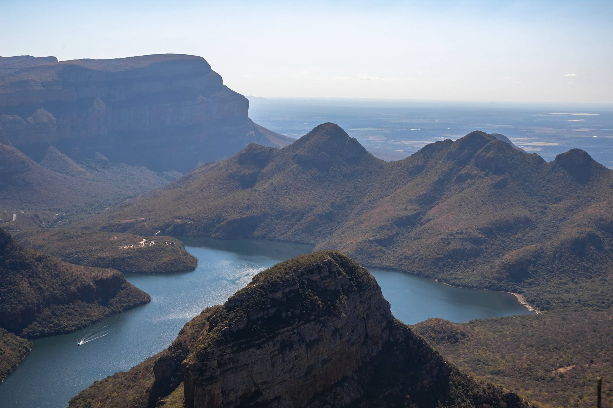
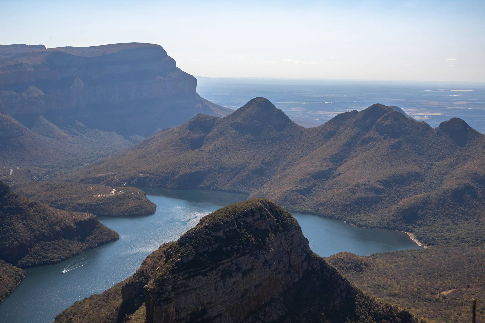
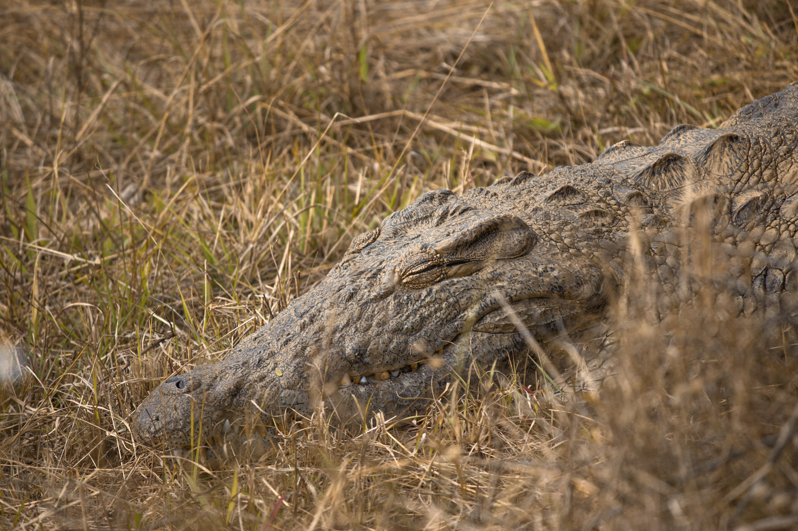
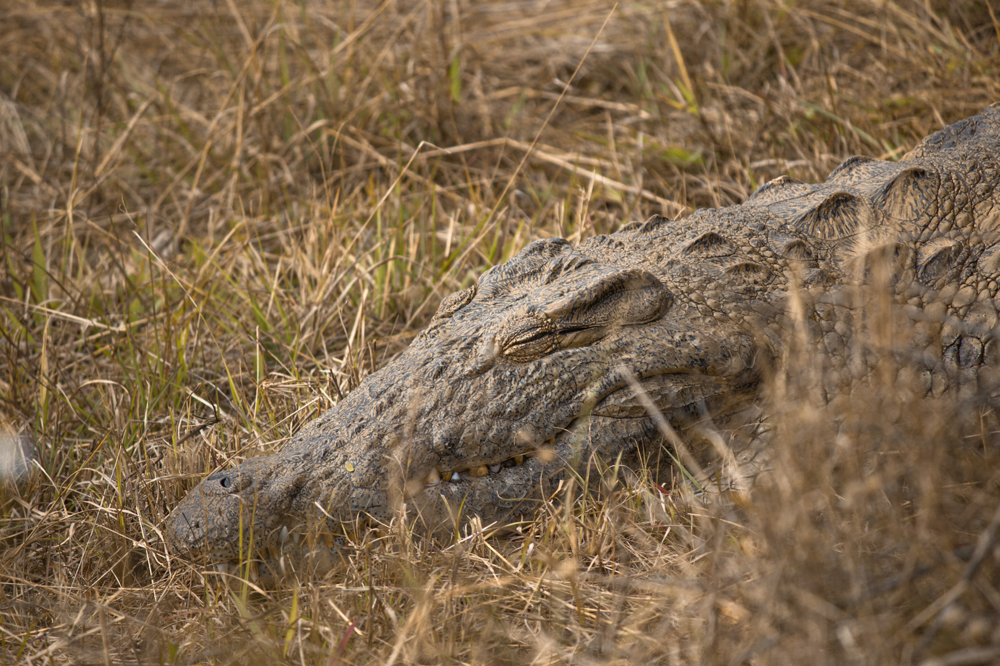

/
Graphisme/
Afrique du Sud
Afrique du Sud
Photographies prises durant mon voyage en Afrique du Sud.
Description du projet
Logiciel utilisé
• Adobe Lightroom
En août 2018, j’ai eu l’opportunité de voyager en Afrique du Sud ainsi qu'en Eswatini.
Durant ce séjour, j'ai eu la chance de visiter le fabuleux Parc Kruger ainsi que des parcs naturels se situant aux alentours dans
lesquels j'ai pu être confronté à la faune sauvage de l'Afrique du Sud.
Pour prendre ces clichés, j'ai utilisé un appareil photo reflex que j'avais emprunté à une amie (Canon 400D) que j'ai couplé avec
un objectif 15-55 ainsi qu’un téléobjectif 55-250mm de la marque Canon également.
Après ces sessions de prise de vues, j’ai ensuite trier
mes photos avant de les importer dans Adobe Lightroom, afin d'effectuer des retouches colorimétriques
pour mettre en valeur les sujets.
Années : 2018
 

 
